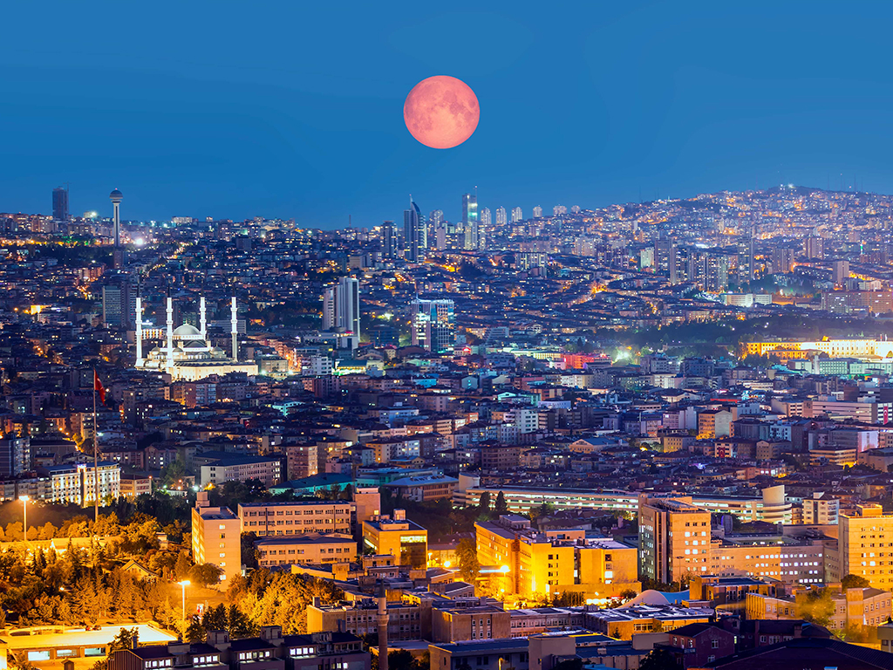
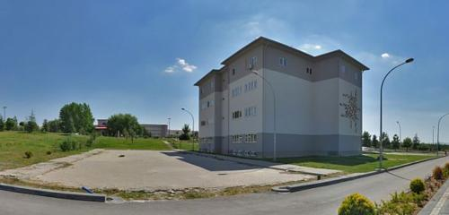
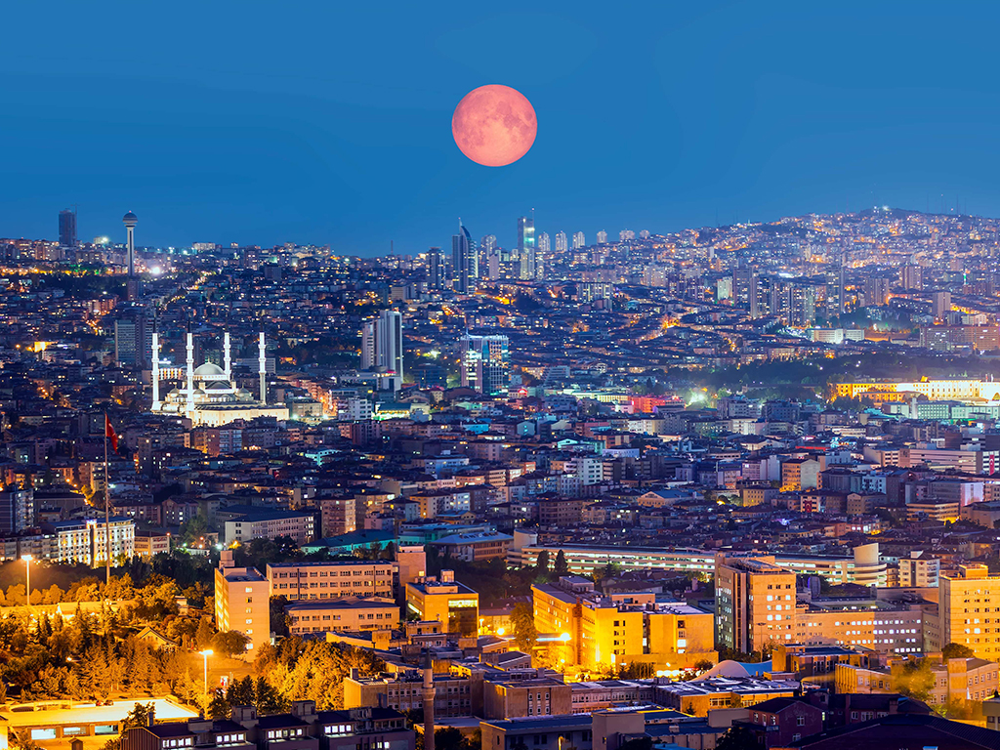
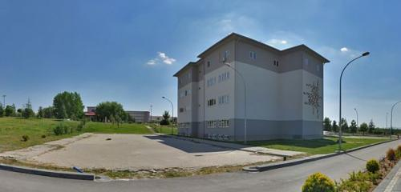

Let's Meet!
Born in Antalya, 2001, where I have my origins from, I had spent the 20 years of my life having completed both primary and secondary school. Ankara was the next destination for me afterwards for my higher education. Currently being a senior student in Department of Geomatics Engineering, Hacettepe University, my last 3 years were spent in Ankara.
 


